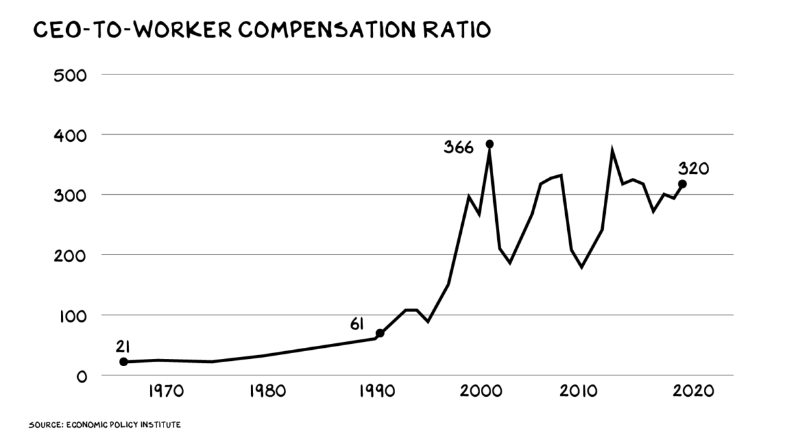

Why do CEOs get more and more shares of the money?


CEOs are getting exponentially more compensations than workers, from 1970 to 2020 the compensation ratio between ceos and worker have been multiplied by a factor of 10. As we have entered a more and more financialized society with more companies using financial market to go public and get fund we have have also seen stocks and options being part of the compensation of not only CEOs but also top executives increasing in turn their net compensations. Are CEOs worth the amount of compensation they actually get is another question which far behond my skills but the increasing gap between poor and rich can maybe be illustrated by this fact about the ration of compensation between CEOs and Workers.
What could be interesting to study is the CEOs skills impacts on the performance of companies and workers productivity impact on this same performance. Knowing the contribution of each of these two hands that drive every companies can be an additional piece of informtiaion that could tell us more about the increasing gap between the compasention of CEOs and Workets. Segmenting this fact in term of industries could also be insightful because it will help us see the industries wich have the highest compensation ratio between CEOs and workers but I should confess that my guess is that the tech industry is this industry where CEO get almost all of the money but true fact don't lie on confession but on serious studies that process quantitative and qualitative facts like this fact illustrated by this chart about the ratio of compensation between CEOs and Workers.
Why CEOs are getting more and more shares of the revenues generated by companies is question worth answering and I think that I have laid out some path that could be taken in order to get to the answer using a quantitative analysis that will take into account the contribution of the skills of ceos and the productivity of work on companies revenues. Maybe this kind of study is already done, if it does please give me a source like a link to a research paper and I would be happy to read it but this will be part of this publishing experiment about Metrics of Jobs.
I was not so long but this short assembly of words that one can call stories, articles surely started from this chart that I got from the newsletter of prof. Scott Galloway then from a chart can start a story, a conversation that could be useful to some people. I have been thinking about a tech-enabled solution about Charts, Stories and people and this tech enabled idea looks like screenshot stories but was highlighted to me by my contribution to this initiative into which Seth Godin invited me to join and this initiative is about us about the world about what we could do next for making the world a better world which is likely a very big chosen goal for a humble and powerless man like me but trying helped me learn a lot good ideas and persons then why not. This article can be taken as an example of this new tech enabled idea that I am writing about as a way to say that it is possible that another one like you look at a chart and tells us something about it like what I did with this short assembly of words cemented by a very poor quality grammatical english syntax but you can do better than me for sure that’s why your contribution to this tech enabled idea about chart will be important and this tech enabled idea is about publishing and you can clearly see and know that for a year I have been writing about data-driven books with this venture called book Dojo to say that all of this is coherent to the path I have taken as this alone CEO running a publishing startup but a year is a lot and this venture is seeking fund to implements all these great tech enabled ideas and platform we have disvored and tested during this exciting year period. Then as the CEO I am getting zero compensation and I don't know how I will get in the future but hope that everyone who will be involved in Book Dojo will be happy when it comes to compensation. For this initiative that I was writing about let me tell you that it is a non-profit initiative for people who care.
PS: this article is the first experiment of this tech-enabled idea about charts and here what is tested is the featured image and we are getting other articles like this one to know how performant we can be not in terms of compensation but but in terms of readership and number of readers and users.